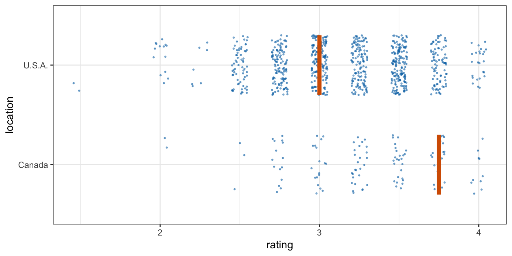
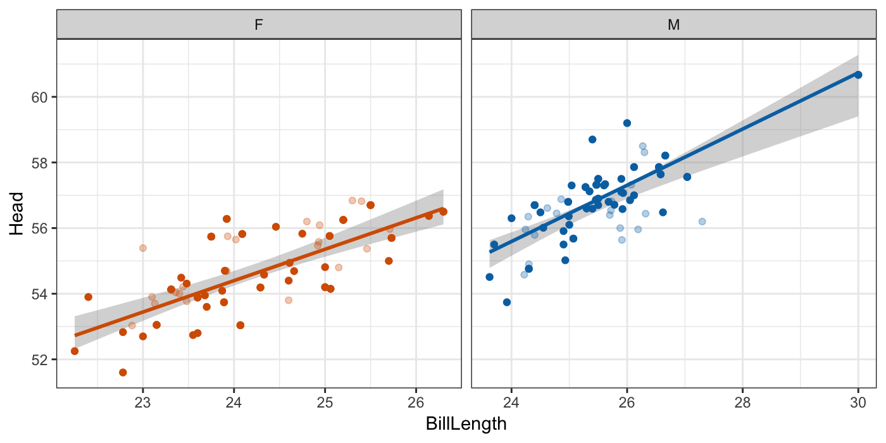
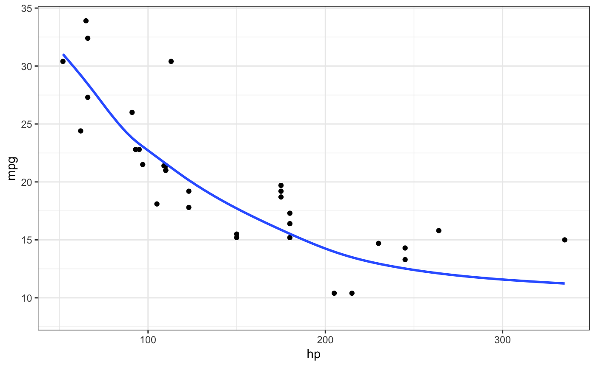
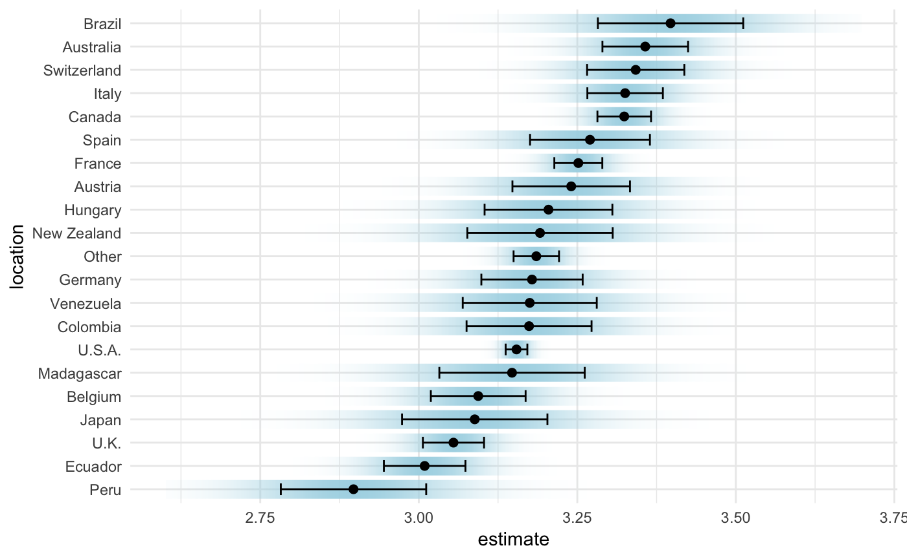

Tools for visualizing uncertainty with ggplot2.
This package is meant to provide helpful add-on functionality for ggplot2 to visualize uncertainty. The package is particularly focused on hypothetical outcome plots (HOPs) and provides bootstrapping and sampling functionality that integrates well with the ggplot2 API.
The package name comes from the German word “Ungewissheit”, which means uncertainty.
The sampler() and bootstrapper() functions generate sampling and bootstrapping objects, respectively, that can be used in place of data in ggplot2 layers. These objects are helpful when creating HOPs.
library(ggplot2)
library(dplyr)
library(forcats)
library(ungeviz)
library(gganimate)
cacao %>% filter(location %in% c("Canada", "U.S.A.")) %>%
ggplot(aes(rating, location)) +
geom_point(
position = position_jitter(height = 0.3, width = 0.05),
size = 0.4, color = "#0072B2", alpha = 1/2
) +
geom_vpline(data = sampler(25, group = location), height = 0.6, color = "#D55E00") +
theme_bw() +
# `.draw` is a generated column indicating the sample draw
transition_states(.draw, 1, 3)
Both the bootstrapper and sampler objects can be used for repeated reproducible sampling, by passing the same bootstrapper or sampler object as data to multiple ggplot2 layers.
data(BlueJays, package = "Stat2Data")
# set up bootstrapping object that generates 20 bootstraps
# and groups by variable `KnownSex`
bsr <- bootstrapper(20, KnownSex)
ggplot(BlueJays, aes(BillLength, Head, color = KnownSex)) +
geom_smooth(method = "lm", color = NA) +
geom_point(alpha = 0.3) +
# `.row` is a generated column providing a unique row number for all rows
geom_point(data = bsr, aes(group = .row)) +
geom_smooth(data = bsr, method = "lm", fullrange = TRUE, se = FALSE) +
facet_wrap(~KnownSex, scales = "free_x") +
scale_color_manual(values = c(F = "#D55E00", M = "#0072B2"), guide = "none") +
theme_bw() +
transition_states(.draw, 1, 1) +
enter_fade() + exit_fade()
Instead of bootstrapping smoothers or regression lines, we can also fit a smoothing model to the data and then generate fit lines by randomly drawing from the posterior distribution. This strategy is automated in stat_smooth_draws(), which works similar to stat_smooth() but generates multiple equally probable fit draws rather than one best-fit line.
ggplot(mtcars, aes(hp, mpg)) +
geom_point() +
stat_smooth_draws(times = 20, aes(group = stat(.draw))) +
theme_bw() +
transition_states(stat(.draw), 1, 2) +
enter_fade() + exit_fade()
Several geoms and stats are provided that can be helpful when visualizing uncertainty, including geom_hpline() and geom_vpline() used in the sampling example above, and stat_confidence_density() which can draw confidence strips.
library(broom)
library(emmeans)
cacao_lumped <- cacao %>%
mutate(
location = fct_lump(location, n = 20)
)
cacao_means <- lm(rating ~ location, data = cacao_lumped) %>%
emmeans("location") %>%
tidy() %>%
mutate(location = fct_reorder(location, estimate))
ggplot(cacao_means, aes(x = estimate, moe = std.error, y = location)) +
stat_confidence_density(fill = "lightblue", height = 0.8, confidence = 0.68) +
geom_point(aes(x = estimate), size = 2) +
geom_errorbarh(aes(xmin = estimate - std.error, xmax = estimate + std.error), height = 0.5) +
xlim(2.6, 3.7) +
theme_minimal()